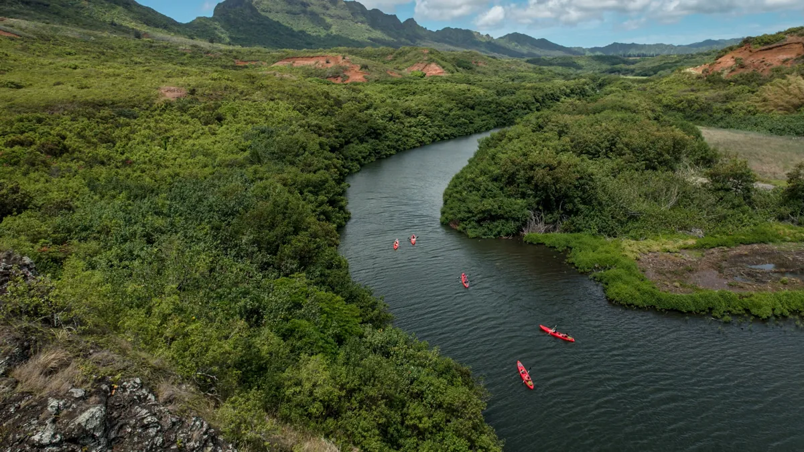

Tourism video production: the five moments every tour film needs
A tour film that books is built from five moments, one for each stage of the guest's decision. Here is what they are, how to film them and where each one goes.

A tour film that books is not a highlight reel. It is five moments, each filmed on purpose, each doing a different job in the guest’s decision. Get those five and you have a project film, a set of reels and a year of social content from one day on location. Miss them and you have beautiful footage that does not sell anything.
Here are the five, in the order a guest meets them.
1. The first look
This is the shot that stops the scroll: the cliffs coming into view from the bow, the drop on the first zipline, the manta turning under the lights. It has to work in the first three seconds, silent, on a phone, for someone who has never heard of you. It is the hardest shot to get and the one most tourism video production skips, because it needs the right light, the right position on the boat or the trail, and a crew that knew it was coming.
Where it goes: the opening of the project film, and on its own as the Dream reel.
How to film it: plan it in the brief. Ask the captain or lead guide where the moment happens and what time the light is right. Be there first.
2. The getting there
Planners want to know what the day looks like before they commit. The check-in, the briefing, the walk to the dock, the gear going on. It is not glamorous and it is the moment that answers the quiet questions: is this for me, can my dad do it, what do I wear.
Where it goes: the second section of the film, and as Plan content on social, often with text on screen.
How to film it: real guests, real guides, no staging. This is the one place a guide’s phone footage can genuinely help if the production shoot missed it.
3. The face
Somewhere on every tour a guest’s face changes. The breath after the jump, the laugh when the spray hits, the quiet at the top of the ridge. This is the proof moment, and it is what a planner needs to see to become a booker. It cannot be acted, and it is why the crew has to be on the tour while it is running, not shooting a staged version on a quiet day.
Where it goes: the middle of the film and the Decide reels. It is also the best photo in the set.
How to film it: a long lens, patience, and a crew that stays out of the way. Anyone who appears in the work signs a release.
4. The guide
Guests do not book a boat. They book the person who will look after them on it. A guide explaining the reef, or pointing at a whale, or laughing with a kid in the front row, does more for trust than any amount of scenery. Operators are often shy about putting their team on camera. Put them on camera.
Where it goes: throughout the film, and as its own Experience content for guests who have already booked.
How to film it: interview the guide for ten minutes, then use the audio under footage of them working. Do not script them.
5. The story they tell afterwards
The last moment is the one a guest retells on the drive home. Sometimes it is the turtle. Sometimes it is the guide. Sometimes it is a guest’s own reaction, caught on the way back to the harbor. Film the end of the tour as carefully as the start, because the end is what people remember and what they repeat.
Where it goes: the close of the film, and the Advocate content that turns a guest into the person who brings the next one.
How to film it: keep rolling on the way back. The best line of the day is usually said when everyone thinks the shoot is over.
One shoot, five moments, a year of content
When a shoot is planned around these five, the edit is simple. The project film is the five in order. The reels are each one on its own, cut for each platform. The photo set has a frame from each. Everything the social media retainer needs for the next twelve months came from one brief, and every post has a stage of the decision to do its job at.
That is the whole idea behind Reels to Reservations. If you want a Hawaiʻi videographer to plan a shoot around it, tell us what you run and what you want guests to feel.